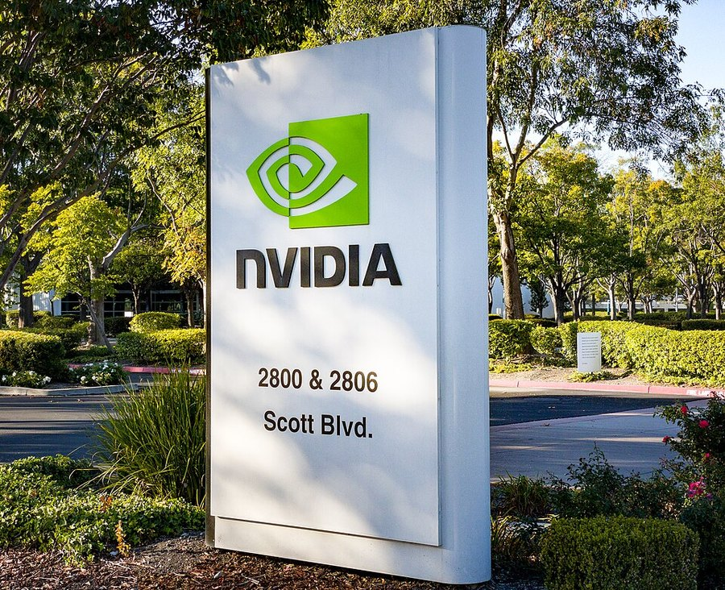
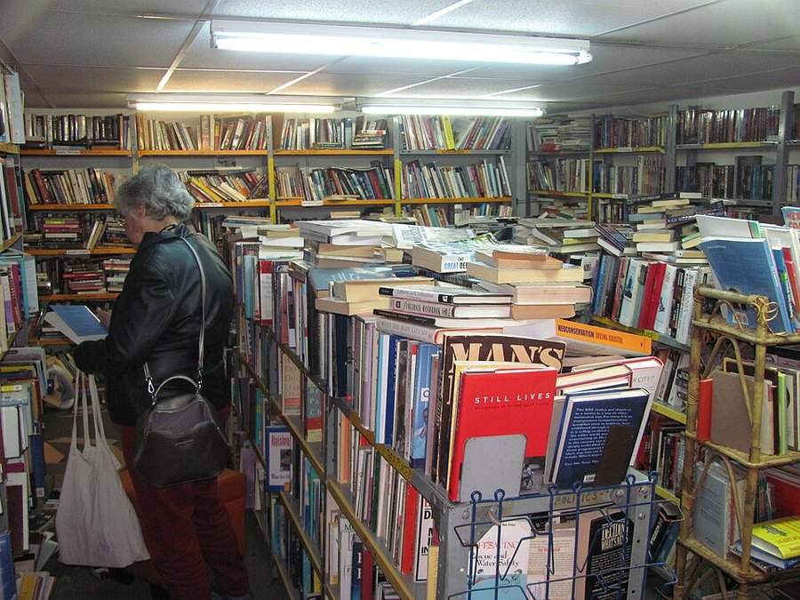

Машина · главное
Восемьдесят процентов на одном человеке
Отставка Дженсена Хуанга — не скандал из светской хроники, а тест на устройство всей ИИ-отрасли: она построена на одной компании, которая одновременно продаёт оборудование и финансирует покупателей.
Совет директоров Nvidia неделю назад открыл расследование в отношении тогда ещё гендиректора Дженсена Хуанга — и, судя по всему, сам не верил, что дело дойдёт до отставки. Дошло: в четверг, 12 ноября, Хуанг ушёл. Обязанности временно исполняет финансовый директор Колетт Кресс, член совета с многолетним стажем.
Причина на поверхности: связь с бывшей руководительницей клиента Nvidia — компании Megaspeed, которую подозревают в связях с китайской разведкой. Потом всплыла вторая история внутри самой компании, а Reuters сообщил о третьей. Ускорило всё это сообщение Bloomberg от 9 ноября: главный юрист Nvidia, по данным агентства, участвовал в запросах о расследовании Министерства торговли в отношении Алисы Хуанг. Именно тогда скандал перестал быть личным делом одного человека.
Но интересно здесь не то, кто с кем спал. Интересно, что Nvidia — это примерно 80 % рынка ИИ-ускорителей, и та же компания по совместительству главный инвестор отрасли: по данным, которые приводит TechCrunch, 99 миллиардов долларов вложений, ещё 25 миллиардов обязательств и 36 миллиардов по облачным сервисам. CoreWeave, Nebius, OpenAI, Anthropic, дата-центры — деньги Nvidia есть почти везде, где есть слово «ИИ».
Получается замкнутый круг, который в отрасли называют циклической ИИ-экономикой: Nvidia продаёт железо тем, кому сама же и дала денег на это железо. Пока круг держится, токены дешевы, потому что за них платят не только клиенты, но и инвесторы. Если компания перейдёт в режим «считать расходы» — а финансовый директор во главе обычно означает именно это, — из круга уйдёт один из главных источников денег.
Конгресс, кстати, уже отреагировал на историю по-своему: законодатели предлагают ужесточить правила экспорта ИИ-чипов, поскольку сам Хуанг публично выступал за их смягчение для Китая. Логика простая: человек, который ратует за свободные поставки, теперь плохой аргумент в пользу свободных поставок.
Петицию с требованием вернуть Хуанга к воскресенью подписали и некоторые известные в отрасли люди, включая Илона Маска. Это, пожалуй, лучшая иллюстрация того, насколько отрасль привыкла к одному лицу: не «найдём другого управленца», а «верните прежнего».

Коротко
- Кто ушёлДженсен Хуанг, соучредитель и гендиректор, — в четверг 12 ноября.
- Кто вместоКолетт Кресс, финансовый директор и многолетний член совета, — и. о. гендиректора.
- Доля рынкаОколо 80 % рынка ИИ-ускорителей.
- Деньги99 млрд долларов инвестиций, 25 млрд обязательств, 36 млрд по облачным сервисам.
Что здесь факт, а что — обещание
Факт: отставка, имя исполняющего обязанности, доля рынка и суммы вложений названы в первоисточниках — это данные, а не оценки.
Не факт: что «ИИ-пузырь лопнет». Никто этого не знает, и один уход, даже громкий, ничего не доказывает. Речь только о том, что из отрасли может уйти один из крупных источников дешёвых денег.
Что делать практически: ничего срочного. Но цены на API у своих провайдеров стоит пересматривать раз в неделю — в такие месяцы они меняются без предупреждения, и не в сторону понижения.
Книги
Второй материал · 4 минутыМиллион подержанных книг переехал на барахолку
Alibris выставил больше миллиона букинистических изданий на Temu. Книги при этом не поплывут через океан: сделка идёт по программе локальных продавцов.

Старейший американский агрегатор подержанных книг Alibris подписал соглашение с Temu: на маркетплейсе появятся более миллиона изданий. Об этом сообщил Publishers Weekly, а Literary Hub пересказал с той интонацией, с какой обычно сообщают о переезде родственника в общежитие.
Технически всё аккуратно: книги идут по программе Temu для местных продавцов, то есть хранятся и отправляются внутри США, а не едут контейнерами через полмира. Для Alibris это не первый такой шаг — год назад компания договорилась с Shein. Модель ясна: не строить свой магазин, а ставить стеллаж там, где уже ходят люди.
Смущает другое. Temu давно стал синонимом дешёвого и странного, а кроме того, его преследуют обвинения в нарушении приватности и прав интеллектуальной собственности; отдельное исследование конгресса США указывало на высокий риск принудительного труда в цепочке поставок маркетплейса. Книга, разумеется, не туфли, и склад в Нью-Джерси не фабрика в провинции — но репутация места липнет к товару.
Для самиздата это пока новость со стороны: подержанный рынок живёт старой бумагой, а не новыми авторами. Но тренд касается всех. Ретейл сжимается в несколько воронок, и букинистика — последний угол, где ещё держался мелкий продавец со своим каталогом и своей ценой. Когда и он уходит на общий прилавок, исчезает не книга, а разница в цене между «нашли у букиниста» и «взяли что дают».
Небо
Заметка · 3 минутыДвенадцать футбольных полей льда
На Пунчак-Джая, одной из немногих экваториальных вершин с круглогодичным льдом, ледников больше нет — остались неподвижные пятна. По снимкам Landsat: было 4,31 квадратного километра, стало 0,09.
Климатолог Доналди Пермана из индонезийского агентства BMKG посчитал по спутниковым и аэросъёмочным данным: в 1988 году ледники Пунчак-Джая занимали 4,31 квадратного километра, к сентябрю 2025-го осталось 0,09 — примерно два процента прежней площади, около дюжины футбольных полей.
Дело не только в площади. На основной станции наблюдения толщина льда упала с 32 метров в 2010 году до 4 метров в 2023-м, а к ноябрю 2024-го льда там не осталось вовсе. Ледником, по определению, считается масса, способная течь под собственным весом; здешние остатки уже не текут. «Их функциональная жизнь как активных ледников фактически закончена», — говорит Пермана.
Дальше работает геометрия: чем сильнее лёд дробится, тем больше у него открытых краёв, тем быстрее он тает. Снег в горах ещё выпадает, но не лежит достаточно долго, чтобы превратиться в новый лёд. Гляциолог Крис Шуман называет это «задачей с домино»: «Как только процесс пошёл, повернуть его уже нечем».
Прогнозы сходятся на том, что основные участки исчезнут около 2030 года, но BMKG считает, что раньше — нынешний Эль-Ниньо ускоряет дело: уровень замерзания поднимается выше вершины, осадки выпадают дождём, а без свежего белого снега тёмная поверхность греется быстрее. В Эль-Ниньо 2015–2016 годов лёд терял по 5,3 метра толщины за год.
Тело
Заметка · 3 минутыДве области, которые сдаются первыми
Учёные из Джонса Хопкинса нашли участки мозга, которые уменьшаются раньше гиппокампа — за пять-десять лет до первых провалов в памяти.
Врачи привыкли искать начало болезни Альцгеймера в гиппокампе — области, отвечающей за память. Группа под руководством Майкла Миллера, разобрав сотни МРТ- и ПЭТ-сканов из двух независимых исследований, обнаружила, что раньше сдают две соседние структуры: энторинальная кора и миндалина, отвечающие за память и эмоции.
«Мы нашли ранние изменения, которые проявляют клинические биомаркеры атрофии за десять лет до симптомов, — говорит Миллер. — Это история на пять-десять лет, когда мозг уже меняется. Представьте, что лечить нейродегенерацию можно было бы на втором, третьем, четвёртом году, а не после пятнадцатого, когда уже проваливается память».
Изменения связаны с накоплением белка тау — того самого, что образует в нейронах спутанные клубки. Работа опубликована в NeuroImage: Reports и представлена на конференции Neuroscience 2026. Практическая ценность пока одна, но важная: если смотреть на две области вместо одной, риск можно заметить раньше — и, соответственно, раньше начать наблюдение.
Осторожность обязательна. Это не тест и не диагностика: речь об исследовании, а не о процедуре, которую можно попросить в поликлинике. И «уменьшается быстрее» не значит «болезнь неизбежна» — у части людей изменения есть, а симптомов не появляется никогда.
Инструментарий
Заметка · 3 минутыДвести тысяч вопросов о здоровье
Apple выпустила приложение-исследование: как люди спрашивают ИИ о здоровье и что меняется, если ответ опирается на медицинские журналы, а не на интернет.
Apple не стала делать ещё одного чат-бота. Вместе с медицинской ИИ-компанией OpenEvidence она запустила приложение-исследование: участники задают бытовые вопросы о здоровье и получают ответы, построенные на данных New England Journal of Medicine, JAMA и Nature. Набор — до 200 тысяч человек в США старше 21 года, с iPhone 15 и новее, iOS 26 и включённым Apple Intelligence; исследование рассчитано более чем на год.
Ответы можно оценивать, раз в месяц участников ждут опросы, а из HealthKit разрешено подтянуть пульс в покое, сон, активность и анализы — тогда подсказки становятся конкретнее. Apple обещает: данные обезличиваются перед отправкой в стороннее облако, для обучения моделей не используются, а OpenEvidence удаляет запрос и ответ через сутки.
«В Apple считают, что ответственные инновации начинаются с научной строгости и клинической опоры, — заявила вице-президент по здоровью Сумбул Десаи. — Здоровье глубоко личное, и специальное исследование — самый вдумчивый способ понять, как люди взаимодействуют с медицинским ИИ».
Ставка понятна: OpenAI ещё в начале года сообщала, что пользователи задают ей более 300 миллионов вопросов о здоровье в неделю. Вопрос не в том, кто ответит, а в том, чем ответ подтверждён. Для человека, который спрашивает ИИ о симптомах, разница между «модель помнит» и «модель цитирует JAMA» — и есть вся разница.
Тяжёлый звук
Заметка · 3 минуты«Пока не предложат двести миллионов»
Питер Хук на церемонии Зала славы рок-н-ролла закрыл вопрос о воссоединении New Order — почти. Кроме одной оговорки, произнесённой со смехом.
В субботу Joy Division и New Order ввели в Зал славы рок-н-ролла. Награду принимал один Питер Хук — ни Бернарда Самнера, ни остальных на сцене не было. Басист спел «Love Will Tear Us Apart» и «Bizarre Love Triangle» с музыкантами Deftones и Лорен Мэйберри из CHVRCHES, поблагодарил в речи фанатов и бывших коллег не упомянул.
Журналистам он объяснил почему: «Из-за того, что они сделали со мной и моей семьёй, я их никогда не прощу. Просто и ясно». Хук ушёл из New Order в 2007 году — не только из-за творческих разногласий с Самнером, но и после многолетней судебной тяжбы за имя группы и её финансы.
И тут же оставил щёлочку: «Если только предложат 200 миллионов — тогда сделаю как Oasis». С этим он ушёл от микрофона, смеясь. Шутка с точным адресом: Oasis в тот же вечер тоже вводили в Зал славы, и их воссоединение — главный коммерческий сюжет года.
New Order продолжает гастролировать без Хука: в конце ноября — Южная Америка, в марте — неделя концертов в США. Так что поклонникам остаётся выбирать между двумя реальностями: та, где прощение стоит двести миллионов, и та, где его просто нет.
Экран
Заметка · 3 минутыСорок пять лет — это только начало
Новый «Пятница, 13-е» выйдет в 2027 году, и снимать его будет Стив Майнер — тот, кто сделал вторую и третью части. Продюсер объясняет: это не перезапуск, а фундамент на следующие сорок пять лет.
Объявление сделали в пятницу, 13 ноября — дата сама себя объясняет. Студия запускает тринадцатый по счёту фильм франшизы (с поправкой на юридические тонкости) и возвращает за режиссёрский пульт Стива Майнера, снявшего вторую и третью части.
Продюсер Робби Барсамян в интервью TheWrap говорит, что картина — часть связанной серии историй, которую раньше называли «Вселенной Джейсона»: фильмы, сериал, игры, мерчандайз, фан-мероприятия. «Это точно первый из многих новых фильмов. Наша цель — начать следующую эру франшизы на большом экране».
Про Майнера он объясняет почти как про реставратора: «Кто лучше подходит на место режиссёра, чем человек, который создал икону и обеспечил франшизе жизнь на десятилетия? Нас поразило, что он не просто оглядывался назад — он смотрел вперёд. Он пришёл с задачей перезапустить франшизу восьмидесятых на следующие 45 лет».
Обещания привычные: практические эффекты вместо графики, «изобретательные убийства», персонажи, за которых хочется болеть. Проверить это можно будет в 2027 году — а до тех пор стоит помнить, что франшиза стояла много лет из-за споров о правах, и нынешний энтузиазм во многом объясняется тем, что споры наконец кончились.